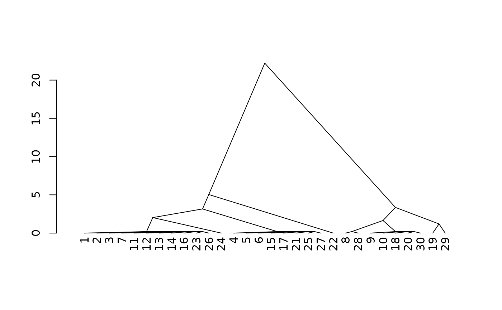

A method for applying standardized, customizable "similar soils" rules to site-level data derived from various sources.
Usage
similar_soils(
x,
mapping,
condition = NULL,
idname = "id",
thresh = NULL,
thresh_single = 2,
thresh_all = 3,
absolute = TRUE,
verbose = TRUE
)Arguments
- x
A data.frame or a SoilProfileCollection
- mapping
A named list of functions. List element names refer to site-level data columns of
x. Each specified function provides a conversion of the data element inxto a value used in the "similar soils" calculation.- condition
integer or character. Default:
NULLthe value is calculated internally based on the dominant condition of intersection of mapping results inx. You may specify an integer row ID inxfor specific similar soil contrasts, or you can specify a character dominant condition equivalent to the name assigned byinteraction()e.g."4.3"for a two rating mapping result where the first rating has value4and the second has value3- idname
ID column name, default
"id"- thresh
Deprecated. If used passed to
thresh_all.- thresh_single
Sum of differences relative to dominant condition in
x. Default1. See details for discussion on the default calculation for similarity.- thresh_all
Sum of differences relative to dominant condition in
x. Default1. See details for discussion on the default calculation for similarity.- absolute
logical. Report absolute difference? Default:
TRUE. Absolute difference is always used for comparison against thresh.- verbose
Default:
TRUEmessage about selectedcondition
Value
A data.frame containing inputs and three new columns:
similar_single (maximum difference in any one property, relative to
condition), similar_dist (cumulative sum of differences relative to
condition), similar (logical; soil is similar to condition)
Details
The sum of differences across conditions (specified by the intersection of
output of the functions in mapping) is used as the "distance" of a soil
relative to a dominant (or otherwise specified) condition. A threshold value
is used to decide which are "similar" and which are not. The functions in
mapping can be customized to use alternate thresholds.
References
Norfleet, M.L. and Eppinette, R.T. (1993), A Mathematical Model for Determining Similar and Contrasting Inclusions for Map Unit Descriptons. Soil Survey Horizons, 34: 4-5. https://doi.org/10.2136/sh1993.1.0004
Examples
set.seed(456)
x <- do.call('rbind', lapply(1:3, \(i) data.frame(id =
paste0(LETTERS[1:10], i), taxpartsize = c("fine-loamy", "loamy",
"fine-loamy", "fine-loamy", "coarse-loamy", "coarse-loamy", "coarse-loamy",
"loamy-skeletal", "loamy-skeletal", "loamy-skeletal"), depth = runif(10,
35, 150), pscs_clay = c(runif(4, 18, 35), runif(6, 14, 18)), pscs_frags =
c(runif(3, 0, 15), runif(4, 10, 34), runif(3, 35, 60) + c(0, 40, 0)))))
rate_taxpartsize <- function(x) {
# TODO: this is just made up logic for this example and needs to be updated
dplyr::case_match(x,
c("sandy-skeletal") ~ 1,
c("sandy") ~ 2,
c("loamy", "coarse-loamy", "coarse-silty") ~ 3,
c("fine-loamy", "fine-silty") ~ 4,
c("clayey", "fine") ~ 5,
c("very-fine") ~ 6,
c("loamy-skeletal", "clayey-skeletal") ~ 7)
}
rate_depthclass <- function(x, breaks = c( `very shallow` = 25, `shallow` =
50, `moderately deep` = 100, `deep` = 150, `very deep` = 1e4 ), pattern =
"R|Cr|Cd|kk|m", hzdesgn = aqp::guessHzDesgnName(x, required = TRUE),
...) {
res <- cut(x, c(0, breaks))
factor(res, levels = levels(res), labels = names(breaks), ordered = TRUE)
}
rate_pscs_clay <- function(x,
breaks = c(18, 27, 40, 60, 100)) {
res <- cut(x, c(0, breaks))
factor(res, levels = levels(res), ordered = TRUE)
}
m <- list(taxpartsize = rate_taxpartsize, depth = rate_depthclass,
pscs_clay = rate_pscs_clay)
s <- similar_soils(x, m)
#> comparing to dominant reference condition (`7.3.1` on 6 rows)
head(s)
#> id taxpartsize depth pscs_clay similar_dist similar_single similar
#> 1 A1 4 2 2 5 3 FALSE
#> 2 B1 3 3 2 5 4 FALSE
#> 3 C1 4 4 3 6 3 FALSE
#> 4 D1 4 4 3 6 3 FALSE
#> 5 E1 3 4 1 5 4 FALSE
#> 6 F1 3 3 1 4 4 FALSE
# inspect distances using agglomerative clustering+dendrogram
d <- cluster::agnes(s[, 5, drop = FALSE], method="gaverage")
d$height <- d$height + 0.2 # fudge factor for 0-distance
plot(stats::as.dendrogram(d), center=TRUE, type="triangle")

# allow relative contrast ratings to be negative # (i.e. ordinal factors, concept of "limiting")
# absolute value is still used for "similar" threshold
s2 <- similar_soils(x, m, absolute=FALSE)
#> comparing to dominant reference condition (`7.3.1` on 6 rows)
# inspect distances using agglomerative clustering+dendrogram
d2 <- cluster::agnes(s2[, 5, drop = FALSE], method="gaverage")
d2$height <- d2$height + 0.2 # fudge factor for 0-distance
plot(stats::as.dendrogram(d2), center=TRUE, type="triangle")